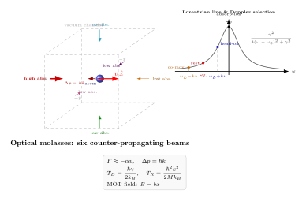

激光冷却怎么把原子冷到 nK?
日常里说某样东西"冷", 意思不过是它的分子动能小一些. 液氮能到 77 K, 液氦能到 4.2 K, 加上稀释制冷机, 我们把铜块、超导芯片拖进了毫开尔文 (mK) 领域. 但要再冷——冷到单个原子几乎不动、德布罗意波长和原子间距可比——这些"热力学"工具就都退场了. 因为它们本质是让冷环境把热量带走, 而环境本身不会比自己更冷.
怎么办? 1975 年, Hänsch 和 Schawlow 在《Opt. Commun.》写下一个看似疯狂的建议: 用激光给原子 "推" 一下. 同年, Wineland 和 Dehmelt 也独立提出了离子的激光冷却方案. 光不是最"热"的东西吗? 恒星表面动辄几千几万 K. 可仔细一想: 单色激光的光子都朝同一个方向走, 和热辐射的各向同性完全不同; 如果能让每次吸收都恰好拦在原子迎面, 光的动量就会一点一点地把原子拖停. 这正是激光冷却的全部秘密, 也是过去半个世纪里把实验物理推到 nK 尺度的核心引擎.
一、光子的踢: $p=\hbar k$ 和多普勒挑选
上一节我们看见康普顿散射里, 光子可以像小钢球一样把电子撞飞. 对于一个原子, 基本故事完全一样: 吸收一个频率为 $\nu$ 的光子, 原子获得动量
$$ \Delta p = \hbar k = \frac{h\nu}{c}. \tag{1} $$
随后它会在某个随机方向上把光子自发辐射掉, 再把动量还一份回去. 但自发辐射是各向同性的, 多次平均下来贡献为零; 而吸收的方向是我们说了算的——朝哪里放激光, 原子就朝哪里挨踢.
单次踢多大? 对钠原子的 $D_2$ 线 ($\lambda=589\text{ nm}$), $k=2\pi/\lambda\approx 1.07\times 10^7\text{ m}^{-1}$, Na 原子 $M\approx 3.82\times 10^{-26}\text{ kg}$, 所以一个光子引起的速度改变
$$ v_{\text{rec}}=\frac{\hbar k}{M}\approx \frac{1.055\times 10^{-34}\times 1.07\times 10^7}{3.82\times 10^{-26}}\approx 2.95\text{ cm/s}. $$
看起来微不足道. 但 Na 的激发态寿命 $\tau\approx 16\text{ ns}$, 一秒钟可以走完 $\sim 3\times 10^7$ 个吸收-辐射循环, 减速可以做到每秒 $\sim 10^5\text{ m/s}^2$ 量级, 相当于十万个 $g$. 原子从炉口飞出时的 $\sim 900$ m/s, 几毫秒内就能刹住. 光的踢, 每次小, 但可以踢得极其频繁.
关键一步是如何让踢永远冲着迎面. 这里出场的是多普勒效应. 把激光频率 $\omega_L$ 调到比原子共振 $\omega_0$ 稍低一点, 失谐 $\delta=\omega_L-\omega_0\lt 0$; 原子静止时, 看到的是红失谐的光, 吸收概率正比于洛伦兹线型 $\gamma^2/[4(\omega_L-\omega_0)^2+\gamma^2]$ 上远离中心的位置, 吸收少. 如果原子以速度 $v$ 朝激光迎面运动, 它在自己参考系里看到的频率被蓝移到 $\omega_L+kv$, 更接近 $\omega_0$, 吸收概率上升; 反过来, 原子若顺着激光跑, 频率被红移到 $\omega_L-kv$, 更偏离共振, 吸收概率下降. 简单讲: 迎头光子更容易被吞, 追尾光子更容易被忽略. 正是我们想要的方向选择器.
在一维上把两束反向激光一起打开, 把原子放中间, 受力对速度做小量展开就得到
$$ F(v)\;\approx\; -\alpha v,\qquad \alpha=-\hbar k^2\,\frac{4s_0\,\delta/\gamma}{[1+s_0+(2\delta/\gamma)^2]^2}, \tag{2} $$
其中 $s_0=I/I_{\text{sat}}$ 是饱和参数. 只要 $\delta\lt 0$, 就有 $\alpha\gt 0$——这是一个真正的阻尼力, 和把球扔进糖浆里受的黏滞力结构完全一样. 把三对互相正交的反向激光叠在一起, 就得到了 1985 年 Chu 组在贝尔实验室实现的 "光学蜜糖" (optical molasses): 任何方向上动起来的原子都被黏住.

二、Doppler 极限: 吸收与自发辐射的拔河
阻尼力听起来像永远能冷到零, 但实际上有一道坎. 每一次自发辐射都朝随机方向吐出一个光子, 给原子一个随机反冲; 整个过程看起来像布朗运动, 温度降不到零而要与扩散取一个平衡. 这就是 Doppler 冷却极限: 对两能级原子, 稳态温度为
$$ k_B T_D = \frac{\hbar\gamma}{2}, \tag{3} $$
其中 $\gamma$ 是激发态的自发辐射宽度 (natural linewidth). 推导上的要点很简单: 阻尼系数 $\alpha$ 越大越冷, 但随机反冲的动量扩散系数 $D$ 随之同样增长, 比值不变. 最优的失谐在 $\delta=-\gamma/2$ 处, 代入即得 (3).
来代一个真实数字. Na $D_2$ 线的自发辐射率
$$ \gamma/2\pi \approx 9.8\text{ MHz} \;\Rightarrow\; \gamma\approx 6.15\times 10^7\text{ s}^{-1}. $$
于是
$$ T_D = \frac{\hbar\gamma}{2 k_B}\approx \frac{1.055\times 10^{-34}\times 6.15\times 10^7}{2\times 1.381\times 10^{-23}}\approx 2.35\times 10^{-4}\text{ K}. $$
即 Na 的多普勒极限约为 240 μK. 这个估算在 1980 年代是公开目标; 真被 Chu 组在 1988 年测到蜜糖里的原子温度时, 大家以为会严格卡在 240 μK 附近. 结果实验读到 40 μK——远低于两能级模型允许的下限. 这件事非常惊人, 是那一年物理界的大事, 也把理论家推到了墙角.
三、Sisyphus 与磁光阱: 突破极限, 把原子钉住
谜底由 Dalibard-Cohen-Tannoudji 与 Chu-Ungar 在 1989 年解开: 真正的碱金属原子不是两能级, 基态有多个塞曼子能级, 对反向激光束形成的偏振梯度极为敏感. 一个朝前走的原子, 身处交替的 $\sigma^+$/$\sigma^-$ 光场中, 自己的子能级能量上下起伏; 每当它爬到一个势能坡顶时, 优化的光泵浦正好把它抽到另一个在那里处于谷底的子能级, 于是它下次只好又从谷里往坡上爬——永远在爬, 永远把动能换成自发辐射带走的光子能量. Cohen-Tannoudji 用古希腊神话中推石上山的西西弗斯给它命名: Sisyphus 冷却.
这一机制的温度尺度不再是 $\gamma$, 而是更小的光位移 (light shift). 对 Na 能做到 $\sim 5$ μK, 对 Cs 和 Rb 能做到亚 μK, 远低于 Doppler 极限. 但还有一道更基本的下限: 哪怕动能降到零, 自发辐射的最后一个光子仍带给原子 $\hbar k$ 的反冲, 对应温度
$$ k_B T_R = \frac{\hbar^2 k^2}{2M}. $$
对 Na, $T_R\approx 2.4$ μK, 约为 $T_D$ 的百分之一. Sisyphus 冷却可以一路冷到 $T_R$ 附近, 但不能越过它. 要越过, 就必须从"强迫散射"的思路里跳出去——后面要讲的蒸发冷却, 根本不再用光子来剥动能.
在冷却的同时还要把原子圈住, 不然它们会被辐射压推开. 解决方案是 1987 年 Pritchard 提议、Chu 组当年实现的磁光阱 (MOT): 在光学蜜糖中再叠一个四极磁场 $B=bx$ (中心为零, 两侧线性), 加上激光的适当圆偏振. Zeeman 效应让原子在偏离中心时感受到更强的共振耦合——从中心往右偏, 就更容易吸收向左的激光, 反之亦然. 净效果是: 位置偏移也被一阶恢复力打回原点, 就像在三维空间中用光加磁场挖了一口井. 一个典型的 MOT 能装 $10^7\sim 10^9$ 个原子, 密度 $\sim 10^{11}\text{ cm}^{-3}$, 温度在 sub-Doppler 区域, 是一切"冷原子"实验的起点.
四、蒸发冷却与 BEC: 最后三个量级
要从几 μK 再降三个量级到 nK, 思路必须换. 把原子装进一个磁阱或光学偶极阱 (此时光与原子远失谐, 只靠势能而不吸收), 关掉所有用于散射的激光, 然后做蒸发冷却: 在阱上开一个小射频"天窗", 只允许能量最高的那一尾原子逃走; 剩下的通过弹性碰撞重新达到热平衡, 平均温度下降. 这正是一杯热咖啡冷却的本质, 只是碗口做得极其精准.
蒸发不是免费的——走掉 $\sim 99\%$ 的原子才能降一个量级温度, 这需要极好的真空和极高的初始密度. 但它没有光子反冲, 原则上可以一直冷下去, 直到量子简并: 德布罗意波长 $\lambda_{\text{dB}}=h/\sqrt{2\pi M k_B T}$ 大到和原子间距可比, 相空间密度 $n\lambda_{\text{dB}}^3\gtrsim 2.612$, 全体原子坍到同一个基态波函数里——玻色-爱因斯坦凝聚 (BEC).
这一步在 1995 年 6 月 5 日早上 10 点 54 分完成. Cornell 和 Wieman 在 JILA 用 $^{87}$Rb 做出了第一个 BEC, 原子数 $\sim 2000$, 温度 $T\approx 170$ nK; 几个月后 Ketterle 在 MIT 用 Na 做出了大得多的 BEC. 2001 年诺贝尔物理学奖授予这三人, 此前 1997 年的奖已经给了 Chu、Cohen-Tannoudji 与 Phillips 以表彰激光冷却. 两次诺贝尔之间的四年, 是整个"冷原子"学科从实验技艺走向一门基础学科的关键时期.
来做一下极限比较. Doppler 极限告诉我们: 只要冷却还靠光子的吸收和自发辐射, 温度就挡在 $\hbar\gamma/(2k_B)$ 量级; Sisyphus 把它降到光位移尺度; 单光子反冲限 $T_R=\hbar^2k^2/(2Mk_B)$ 则是所有涉及一次自发辐射的过程都逃不脱的最终栅栏. 只有让原子完全不再散射光子 (蒸发、拉曼、绝热冷却) 才能翻过这道栅栏. BEC 的 170 nK 比 $T_R$ 小了十倍以上, 正是因为最后几步里光早就退到了配角——它留下的, 是一口深而静的势阱.
这些冷到近乎绝对零度的原子有一大堆应用. Cs 喷泉钟利用激光冷却把原子拖慢到约 1 cm/s, 在两次微波脉冲之间自由落体几百毫秒, 定义了今天秒的单位, 不确定度低至 $10^{-16}$; Sr 光晶格钟更进一步, $10^{-18}$ 级, 把原子钟推到了引力红移日常可测的精度. 冷原子还是目前量子模拟、惯性导航、引力波辅助测量的主力平台. 这一切, 都建立在 1975 年两篇不到三页的通讯上.
小结
"光是什么?" 这一路问下来, 我们依次看到光是波、是电磁场、是粒子、是媒介. 本节给出了一个新面貌: 光还是一种工具——一种能精准输送动量、把冷酷的热力学第三定律再往零点推十几个量级的工具. 光子一次只给原子一脚, 但无数脚累积起来, 配合多普勒的"自动瞄准"、Sisyphus 的"永恒爬坡"、MOT 的"井口守卫"和最后的蒸发, 我们达到了 170 nK 的玻色-爱因斯坦凝聚态, 创造出一种在自然界里不存在的物质. 下一节转向另一个用光为主角的实用方向: 光纤里信号怎样被裹住走几千公里还不散开. 同样是光与物质, 同样是几十年前看似异想天开的提议, 最后把世界改了模样.
▲